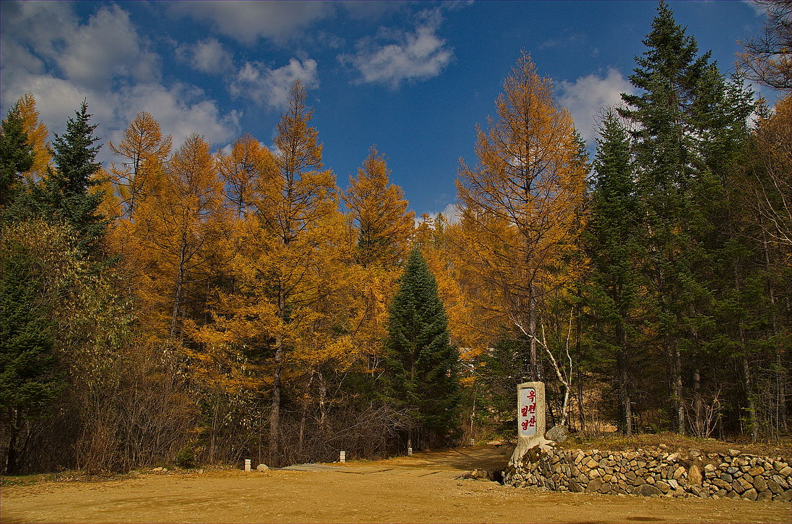
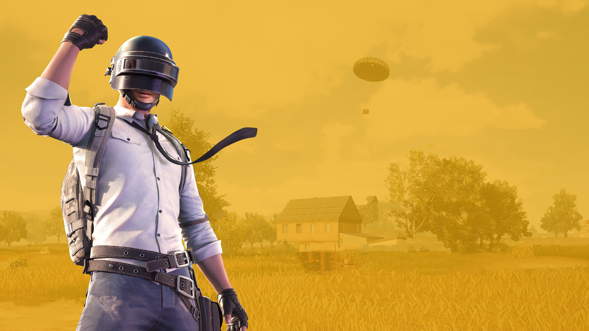
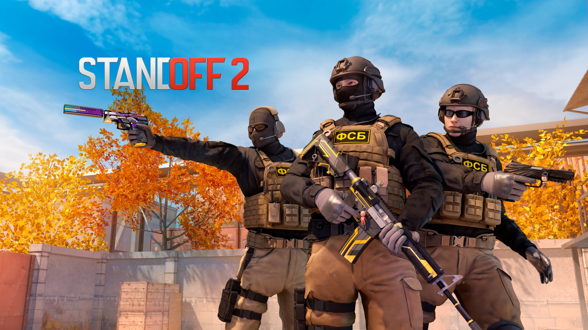

 Вершина вулкана Пэктусан занята альпийской тундрой, кустарничковый покров которой состоит из дриады, золотистого рододендрона, голубики и брусники[2]. В тундре найдены полярный мак, родиола и другие травы[3][4]. Макушки некоторых менее высоких гор поросли кедровым стлаником[5]. На стыке тундры и горного аналога тайги выделяется полоса каменноберёзовых лесов, подобная лесолуговой зоне Камчатки[3]. Бореальные хвойные леса состоят из ели аянской, пихты белокорой и пихты корейской. Вторичные леса этого пояса образованы лиственницей Гмелина, берёзой плосколистной и осиной[6]. В поясе смешанных хвойно-широколиственных лесов господствуют корейский кедр, пихта цельнолистная и в местах с мягкой зимой тсуга Зибольда. Во вторичных лесах преобладают дуб монгольский и липа амурская. В подлеске обычны рододендрон Шлиппенбаха, магнолия Зибольда и вейгела цветущая[6][7]. Стержнем широколиственных лесов являются дуб монгольский, клён ложнозибольдов и линдера туполопастная. Участвуют в этих лесах горный ясень, симплокос метельчатый и многие другие виды[6][7]. На переходе от листопадных к субтропическим вечнозелёным лесам растут листопадные и вечнозелёные дубы, а на Уллындо ещё и бук Энглера. Весьма разнообразны небольшие деревья: граб редкоцветковый, виды стиракса, волчелистник крупноножковый и стюартия псевдокамелия, которые располагаются под пологом буковых или создают собственные леса (граб). В этом поясе сосредоточены гортензия, падуб городчатый и красивоплодник[6]. Для верхней полосы пояса субтропических вечнозелёных лесов характерны кастанопсис и камелия японская, а в нижней полосе расположились лавровые леса из Machilus thunbergii[8]. На месте уничтоженных вечнозелёных лесов развиваются пионерные виды: маллотус японский, Zanthoxylum ailanthoides и прочие[9]. По краям скалистых обрывов в умеренном климате растёт сосна густоцветковая, которой сопутствуют можжевельник твёрдый и рододендрон остроконечный, а в субтропическом климате — сосна Тунберга и вечнозелёный кустарник питтоспорум Тобира[7]. Сосны широко распространились по вторичным лесам, к тому же они часто используются в плантациях[8].
 PlayerUnknown’s Battlegrounds является экшн-игрой, в которой игроки в количестве до 100 человек сражаются в «королевской битве» (англ. Battle Royale), по типу крупномасштабной «last man standing» схватки в deathmatch режиме, где игроки воюют между собой, чтобы стать последним выжившим. Игроки могут выбирать, как войти в матч: в одиночку, в паре, в трио или отрядом из четырёх человек. В любом случае, последний человек или команда, оставшаяся в живых, выигрывает матч[6]. Основываясь на опыте Грина в жанре королевской битвы, остров с множеством особенностей местности был выбран в качестве первой карты, известной как «Эрангель»[7]. Цель дизайна карты заключалась в том, чтобы предложить игрокам множество возможных вариантов стратегического и уникального игрового процесса. Некоторые здания и сооружения были спроектированы в стиле конструктивистской архитектуры Советского Союза 1950-х годов[8]. Во время раннего доступа были запланированы дополнительные карты, например, одна, действие которой происходит на вымышленном острове в Адриатическом море, включая заснеженные территории Югославии. Грин заявил, что, по его мнению, карта Эрангеля кажется разрозненной, несмотря на достижение их целей в игровом процессе, и стремился создать более единые идеи с будущими картами[9]. Каждый матч начинается с того, что все игроки прыгают с парашютом из самолёта над картой, площадь которой 2 x 2, 4 x 4, 6 х 6 или 8 x 8 км[10]. Маршрут полёта самолёта через карту выбирается случайным образом в начале матча, что требует от игроков быстро определить лучший момент для прыжка с парашютом
 После того, как страница Standoff, в то время известной как Active Shooter, была в мае 2018 года[7] опубликована в магазине Steam, игра вызвала споры: родители жертв стрельбы в средней школе Марджори Стоунман Дуглас выступили против онлайн-игры[8][9]. К моменту отмены игры онлайн-петиция собрала 100 000 подписей[4]. 29 мая выяснилось, что Revived Games и Acid Publishing Group были торговыми марками Антона Макаревского[1] и Аты Бердыева, последний из которых ранее был удален из Steam компанией Valve за нарушение авторских прав после публикации пародии на американский мультсериал «Рик и Морти» под названием Piccled Ricc[10]. Позднее компания объявила, что Revived Games и Acid Publishing Group будут удалены с платформы Steam. Пресс-секретарь сказал Мэтью Голту из Motherboard, что Бердыев — «тролль, имеющий историю злоупотреблений с клиентами, публикации защищенных авторским правом материалов и манипуляций с отзывами пользователей»[3][11]. В дальнейшем в сообщении в блоге Acid Software утверждала, что Steam выпускал другие видеоигры с акцентом на насилие и убийства, приведя в качестве примеров Hatred, Postal и Carmageddon[9]. Вслед за реакцией СМИ на игру Valve предложила «в ближайшее время» провести более широкий пересмотр политики в отношении контента[5][6]. Valve опубликовала эту обновленную политику 6 июня 2018 года, в которой указывалось, что они разрешают любой контент в Steam, если он не является незаконным или «троллингом»[12]. Дуг Ломбарди из Valve использовал Active Shooter в качестве примера такого троллинга, так как игра была «разработана только для того, чтобы вызывать возмущение и провоцировать конфликты своим существованием»[13], и даже если другой разработчик, без истории злоупотребления Steam, какую они нашли у Бердыева, выпустил бы подобный продукт, они все равно удалили бы его за троллинг[14]. Позднее, в июне 2018 года, PayPal закрыл учётную запись Acid Software, сославшись на то, что игра нарушила их Политику допустимого использования[15]. Indiegogo примерно в то же время удалил продукт из своего сервиса[16]. Веб-сайты разработчиков, посвященные игре, были закрыты хостингом Bluehost после петиции Sandy Hook Promise[17].